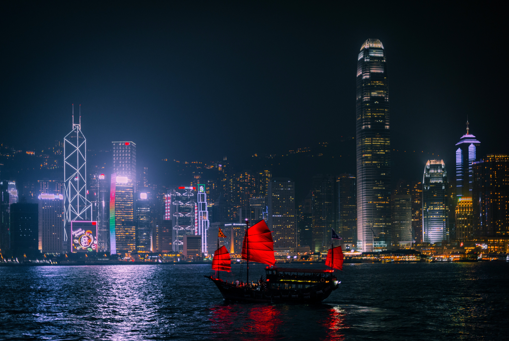
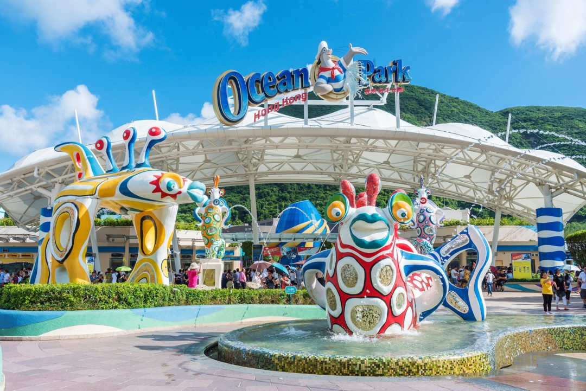
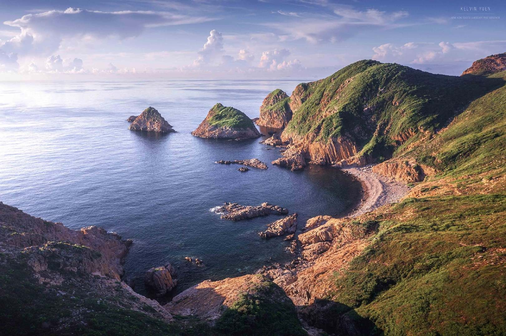

欢迎您！
请登录
首页
旅游景点
港式茶饮
明星艺人

维多利亚港
维多利亚港简称维港，是位于中华人民共和国香港特别行政区的香港岛和九龙半岛之间的海港，是世界三大天然良港之一；因港阔水深，为天然良港。维多利亚港一年四季皆可自由进出，一直影响香港的历史和文化，主导香港的经济和旅游业发展，是香港成为国际化大都市的关键之一。维多利亚海湾入夜后万家灯火，相互辉映，维港夜景因而与函馆、那不勒斯并列“世界三大夜景”。

香港海洋公园
香港海洋公园是一座集海陆动物展览、机动游戏和大型表演于一身的主题公园，分为高峰乐园和海滨乐园两个主要区域。在这里不仅可以看到趣味十足的露天游乐场、海豚表演还有海狮、飞鸟等精彩特技表演，还有千奇百怪的海洋性鱼类、高耸入云的海洋摩天塔，各式各样惊险刺激的机动游乐设施，如过山车、摩天轮、海盗船等，更有惊险刺激的越矿飞车、极速之旅，是访港旅客最爱光顾的地方。
迪士尼乐园
香港迪士尼乐园位于香港新界大屿山，占地126公顷，在2005年9月12日正式开幕，是全球第5座、亚洲第2座，中国第1座迪士尼乐园。香港迪士尼乐园分为7个主题园区，分别为：美国小镇大街、探险世界、幻想世界、明日世界、玩具总动员大本营、灰熊山谷及迷离庄园，其中灰熊山谷和迷离庄园为全球独有。园区内设有主题游乐设施、娱乐表演、互动体验、餐饮服务、商品店铺及小食亭，此外，乐园每天晚上会呈献巡游表演节目及烟花汇演。

香港世界地质公园
中国香港世界地质公园位于香港东北部，面积49.85平方千米，是全球面积较小的世界地质公园。香港世界地质公园是以香港郊野公园、海岸公园和特别地区为基础建立起来的，由西贡火山岩园区和新界东北沉积岩园区组成，包括8个景区。公园内基础设施完善，管理制度规范，有着珍贵的地质遗迹、优美的海岛风光和多样的生态环境，使这里成为天然的地质学博物馆和休闲旅游胜地。
大屿山
大屿山景区，位于香港特别行政区新界离岛区，是香港较大的岛屿，面积达147平方公里。景区海岸线漫长曲折，港湾与沙滩、高山与流水，自然景观和历史古迹交相辉映，区内主要有大东山、黄龙石涧、银矿瀑布、万丈布水涝漕、大屿山郊野公园、昂坪叁宝蝴蝶等自然生态旅游景点，也有宝莲寺、天坛大佛、昂坪360等人文景观。
星光大道
位于香港九龙尖沙咀东部的尖沙咀海滨花园，沿维多利亚港，成为表扬香港电影界的杰出人士的特色景点。星光大道地面装嵌了73名电影名人的牌匾，当中30多块包括从香港德高望重的老牌电影人狄龙、楚原、谢贤，到当代国际港片大师吴宇森、徐克、洪金宝、冯宝宝，和杨紫琼、刘德华、成龙等，都在这里留下了他们的手印。此外，你亦可发现一些穿上滚轴溜冰鞋的星光大使在大道上穿梭来往，为游人提供迅速的协助及服务。
太平山顶
香港港岛太平山顶是为香港岛最高峰，因视野开阔，既可远眺大屿山，俯瞰香港全景，又可见层层叠叠的摩天高楼和维多利亚海港夜景，再结合山顶凌霄阁观光台以及山顶缆车，成为香港一处重要的旅游景点，是香港的标志性景点之一。山顶凌霄阁由著名英国建筑师特果·法雷尔设计，外形呈十分独特的碗形，是集观光、娱乐、购物于一身的香港必游地点，其外貌广被全球数以百万计的明信片及照片取用。
金紫荆广场
金紫荆广场（Golden Bauhinia Square）位于香港会展中心的新冀海旁的博览海滨花园内。“永远盛开的紫荆花”雕塑－金紫荆雕像矗立于香港会议展览中心新翼海旁的博览海滨花园内。金紫荆广场位于香港会展中心旁，是为纪念香港回归祖国而设立。金紫荆广场位于香港湾仔香港会议展览中心新翼人工岛上，三面被维港包围，在维港的中心位置，与对岸的尖沙咀对峙，是观景的好地方。金紫荆广场三面被维港包围，在维港的中心位置，与对岸的尖沙咀对峙，是观景的好地方。
香港购物中心
香港素来被中外游客称作“购物天堂”，香港店铺售卖着世界各地不同特色的货品，由国际顶级品牌至地方特色小商品。你知道香港购物街有哪些吗？去香港购物如何选择香港购物路线？本文整理了香港十大最受欢迎的购物街，有香港时代广场、海港城、香港中环置地广场、太古广场、香港旺角、赤柱市集、铜锣湾、尖沙咀、弥敦道等等，图为香港新城市广场。